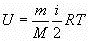

Внутренняя энергия системы - энергия движения и взаимодействия частиц, из которых состоит тело (совокупность всех видов энергии частиц в системе).
Внутренняя энергия тела не зависит от положения тела относительно других тел и от скорости движения тела, от природы в-ва, его массы и параметров состояния сис-мы.
Внутренняя энергия слагается:
- из энергии хаотического движения молекул;
- из потенциальной энергии атомов, образующих молекулу или кристаллическую структуру;
- из внутриатомной энергии и т.д.
Внутренняя энергия тела может проявляться в форме теплоты или в форме работы, совершаемой телом.
Совокупность физических тел, изолированную от взаимодействия с другими телами, называют изолированной термодинамической системой. Состояние системы описывается с помощью параметровсистемы . К параметрам относятся объем V, температура Т. давление р, а также электрическая поляризация, намагниченность и др. При взаимодействии системы с внешними телами ее параметры изменяются. Уравнение, которое связывает между собой объем, температуру и давление называют уравнением состояния f = (p, V, T)=0. Внутренняя энергия тела складывается из кинетической энергии хаотичного теплового движения составляющих его частей (атомов или молекул) и потенциальнойэнергии их взаимодействия. Кинетическая и потенциальная энергия тела, как целого , во внутреннюю энергию не входит.
Теплота и работа.
Внутренняя энергия идеального газа определяется формулой
 где i- число степеней свободы молекулы.
Теплота – это форма передачи энергии от одной части системы к другой. Мера – количество теплоты. Теплота связана с процессом, а не с состоянием системы и не является функцией состояния, зависит от пути процесса.
Первый способ передачи энергии (обмен энергии в виде тепла) реализуется при непосредственном контакте тел, имеющих различную температуру, путём обмена кинетической энергией между молекулами соприкасающихся тел. При этом энергия передаётся от более нагретого тела к менее нагретому, т.е. от тела, имеющего большую среднюю кинетическую энергию молекул, к телу с меньшей кинетической энергией молекул. Поскольку передача энергии этим способом происходит на молекулярном уровне, без видимого движения тел, то её называют микрофизической формой передачи энергии. Количество энергии, переданной первым способом от одного тела к другому, называют количеством теплоты, или просто теплотой.
Второй способ – Обмен энергией м/у сис-мой и внешней средой обуславливается работой, совершаемой системой или над системой.Для передачи энергии этим способом тело должно либо передвигаться в силовом поле, либо изменять свой объём под действием внешнего давления. Иначе говоря, в этом случае передача энергии происходит при условии перемещения всего тела или его части в пространстве. Поэтому второй способ будет макроскопической формой передачи энергии. Этот способ называется передачей энергии в форме работы, а количество переданной энергии в процессе - работой.
В общем случае передача энергии в форме теплоты и в форме работы может происходить одновременно. При этом важно отметить, что в различных термодинамических процессах, в зависимости от условий их протекания, количество теплоты и работы будет также различно.
Следовательно, теплота и работа являются функциями процесса, а не состояния.
Энтальпия (Н) - термодинамическая функция, являющаяся функцией состояния как и внутренняя энергия (U). Ее величина определяется из простого соотношения:
Н = U + pV, (1.5)
где р - давление;
V - объем системы.
При рассмотрении процессов, происходящих в изохорических условиях удобно пользоваться внутренней энергией, а при рассмотрении изобарных процессов - энтальпией.